Generators¶
import numpy as np
import matplotlib.pyplot as plt
\(GAN\)
plt.imshow(np.random.random((10,10,3)))
<matplotlib.image.AxesImage at 0x7f53bed25150>
!pip install git+https://github.com/williamedwardhahn/mpcr
from mpcr import *
Collecting git+https://github.com/williamedwardhahn/mpcr
Cloning https://github.com/williamedwardhahn/mpcr to /tmp/pip-req-build-jjtm41su
Running command git clone -q https://github.com/williamedwardhahn/mpcr /tmp/pip-req-build-jjtm41su
Requirement already satisfied (use --upgrade to upgrade): ImportMPCR==0.0.1 from git+https://github.com/williamedwardhahn/mpcr in /usr/local/lib/python3.7/dist-packages
Building wheels for collected packages: ImportMPCR
Building wheel for ImportMPCR (setup.py) ... ?25l?25hdone
Created wheel for ImportMPCR: filename=ImportMPCR-0.0.1-cp37-none-any.whl size=7332 sha256=677e72068d32fd011c072223f95199352b89a580f073d90d5528cde9a7d901c9
Stored in directory: /tmp/pip-ephem-wheel-cache-vpgpxn6v/wheels/89/93/47/ef43fe80a5b823a05d8dcca5ed1581f4fcdacf69b27110603f
Successfully built ImportMPCR
[nltk_data] Downloading package punkt to /root/nltk_data...
[nltk_data] Package punkt is already up-to-date!
import os
import torch
import torchvision
import torch.nn as nn
from torchvision import transforms
from torchvision.utils import save_image
from torch.autograd import Variable
import pylab
import torchvision.transforms as transforms
from torch.utils.data import DataLoader
from torchvision.datasets import MNIST
import torchvision.utils
def randn_trunc(s): #Truncated Normal Random Numbers
mu = 0
sigma = 0.1
R = stats.truncnorm((-2*sigma - mu) / sigma, (2*sigma - mu) / sigma, loc=mu, scale=sigma)
return R.rvs(s)
def GPU(data):
return torch.tensor(data, requires_grad=True, dtype=torch.float, device=torch.device('cuda'))
def GPU_data(data):
return torch.tensor(data, requires_grad=False, dtype=torch.float, device=torch.device('cuda'))
def plot(x):
if type(x) == torch.Tensor :
x = x.cpu().detach().numpy()
fig, ax = plt.subplots()
im = ax.imshow(x, cmap = 'gray')
ax.axis('off')
fig.set_size_inches(10, 10)
plt.show()
def montage_plot(x):
x = np.pad(x, pad_width=((0, 0), (1, 1), (1, 1)), mode='constant', constant_values=0)
plot(montage(x))
latent_size = 64
hidden_size = 256
image_size = 784
batch_size = 32
%%capture
#MNIST
# train_set = datasets.MNIST('./data', train=True, download=True)
# test_set = datasets.MNIST('./data', train=False, download=True)
#KMNIST
#train_set = datasets.KMNIST('./data', train=True, download=True)
#test_set = datasets.KMNIST('./data', train=False, download=True)
#Fashion MNIST
train_set = datasets.FashionMNIST('./data', train=True, download=True)
test_set = datasets.FashionMNIST('./data', train=False, download=True)
X = train_set.data.numpy()
X_test = test_set.data.numpy()
Y = train_set.targets.numpy()
Y_test = test_set.targets.numpy()
X = X[:,None,:,:]/255
X_test = X_test[:,None,:,:]/255
X = (X - 0.5)/0.5
X_test = (X_test - 0.5)/0.5
n = 7
index = np.where(Y == n)
X = X[index]
index = np.where(Y_test == n)
X_test = X_test[index]
X.shape,Y.shape,X_test.shape,Y_test.shape
((6000, 1, 28, 28), (60000,), (1000, 1, 28, 28), (10000,))
###################################################
X = GPU_data(X)
X_test = GPU_data(X_test)
# Y = GPU_data(Y)
# Y_test = GPU_data(Y_test)
def get_batch(mode):
b = batch_size
if mode == "train":
r = np.random.randint(X.shape[0]-b)
x = X[r:r+b,:,:,:]
y = Y[r:r+b]
elif mode == "test":
r = np.random.randint(X_test.shape[0]-b)
x = X_test[r:r+b,:,:,:]
y = Y_test[r:r+b]
return x,y
x,y = get_batch('train')
montage_plot(x[0:25,0,:,:].detach().cpu().numpy())
X = X.view(-1,784)
def get_batch(mode):
b = batch_size
if mode == "train":
r = np.random.randint(X.shape[0]-b)
x = X[r:r+b,:]
y = Y[r:r+b]
elif mode == "test":
r = np.random.randint(X_test.shape[0]-b)
x = X_test[r:r+b,:]
y = Y_test[r:r+b]
return x,y
# Discriminator
def D(x,w):
x = linear(x,w[0])
x = leaky_relu(x,0.2)
x = linear(x,w[1])
x = leaky_relu(x,0.2)
x = linear(x,w[2])
x = torch.sigmoid(x)
return x
# Generator
def G(x,w):
x = linear(x,w[3])
x = relu(x,0.2)
x = linear(x,w[4])
x = relu(x,0.2)
x = linear(x,w[5])
x = torch.tanh(x)
return x
def backprop(model):
if model == 'D':
d_optimizer.zero_grad()
d_loss.backward()
d_optimizer.step()
elif model == 'G':
g_optimizer.zero_grad()
g_loss.backward()
g_optimizer.step()
# Discriminator
w0 = GPU(randn_trunc((hidden_size,image_size)))
w1 = GPU(randn_trunc((hidden_size,hidden_size)))
w2 = GPU(randn_trunc((1,hidden_size)))
# Generator
w3 = GPU(randn_trunc((hidden_size,latent_size)))
w4 = GPU(randn_trunc((hidden_size,hidden_size)))
w5 = GPU(randn_trunc((image_size,hidden_size )))
w = [w0,w1,w2,w3,w4,w5]
d_optimizer = torch.optim.Adam(w[0:3], lr=0.0002)
g_optimizer = torch.optim.Adam(w[3:], lr=0.0002)
real_labels = Variable(torch.ones(batch_size, 1).cuda())
fake_labels = Variable(torch.zeros(batch_size, 1).cuda())
num_epochs = 100
batches = X.shape[0]//batch_size
steps = num_epochs*batches
z1 = Variable(torch.randn(steps,batch_size,latent_size).cuda())
z2 = Variable(torch.randn(steps,batch_size,latent_size).cuda())
for i in range(steps):
images,y = get_batch('train')
d_loss = binary_cross_entropy(D(images,w), real_labels) + binary_cross_entropy(D(G(z1[i],w),w), fake_labels)
backprop('D')
g_loss = binary_cross_entropy(D(G(z2[i],w),w), real_labels)
backprop('G')
if i % 5000 == 0:
out = G(z1[np.random.randint(steps)],w)
montage_plot(out.view(batch_size,1,28,28).detach().cpu().numpy()[0:25,0,:,:])
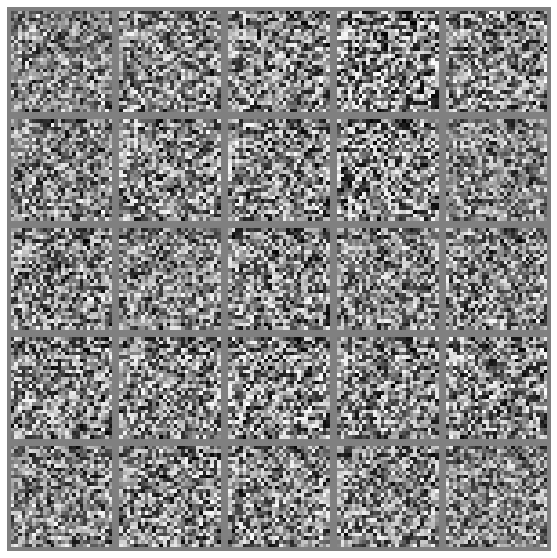
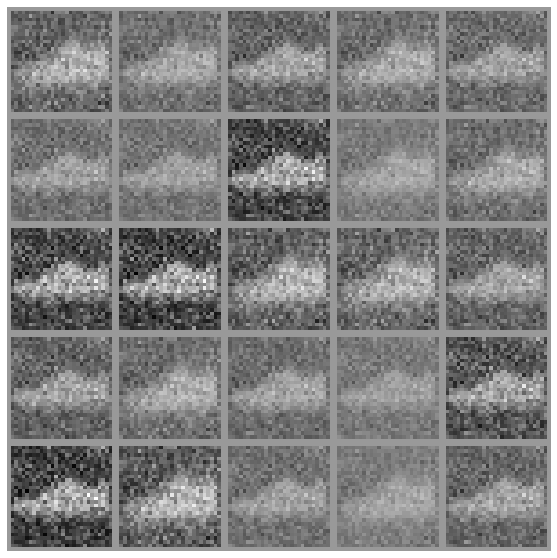
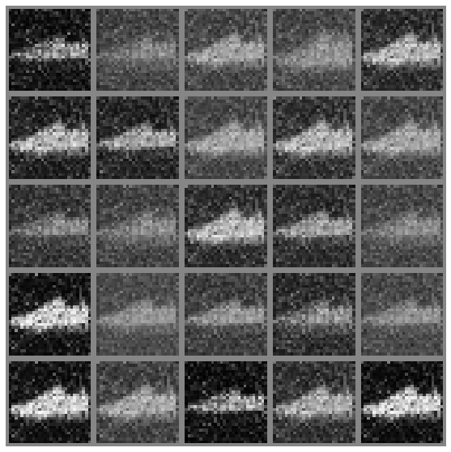
#Convolutional Transpose
!pip install git+https://github.com/williamedwardhahn/mpcr
from mpcr import *
Collecting git+https://github.com/williamedwardhahn/mpcr
Cloning https://github.com/williamedwardhahn/mpcr to /tmp/pip-req-build-nrozr0pv
Running command git clone -q https://github.com/williamedwardhahn/mpcr /tmp/pip-req-build-nrozr0pv
Requirement already satisfied (use --upgrade to upgrade): ImportMPCR==0.0.1 from git+https://github.com/williamedwardhahn/mpcr in /usr/local/lib/python3.7/dist-packages
Building wheels for collected packages: ImportMPCR
Building wheel for ImportMPCR (setup.py) ... ?25l?25hdone
Created wheel for ImportMPCR: filename=ImportMPCR-0.0.1-cp37-none-any.whl size=7332 sha256=d3c6503f7aa6c25d68aa405540d8051428531065b5a22a66adec5e066329b320
Stored in directory: /tmp/pip-ephem-wheel-cache-_7at1ru0/wheels/89/93/47/ef43fe80a5b823a05d8dcca5ed1581f4fcdacf69b27110603f
Successfully built ImportMPCR
import os
import torch
import torchvision
import torch.nn as nn
from torchvision import transforms
from torchvision.utils import save_image
from torch.autograd import Variable
import pylab
import torchvision.transforms as transforms
from torch.utils.data import DataLoader
from torchvision.datasets import MNIST
import torchvision.utils
def randn_trunc(s): #Truncated Normal Random Numbers
mu = 0
sigma = 0.1
R = stats.truncnorm((-2*sigma - mu) / sigma, (2*sigma - mu) / sigma, loc=mu, scale=sigma)
return R.rvs(s)
def GPU(data):
return torch.tensor(data, requires_grad=True, dtype=torch.float, device=torch.device('cuda'))
def GPU_data(data):
return torch.tensor(data, requires_grad=False, dtype=torch.float, device=torch.device('cuda'))
def plot(x):
if type(x) == torch.Tensor :
x = x.cpu().detach().numpy()
fig, ax = plt.subplots()
im = ax.imshow(x, cmap = 'gray')
ax.axis('off')
fig.set_size_inches(10, 10)
plt.show()
def montage_plot(x):
x = np.pad(x, pad_width=((0, 0), (1, 1), (1, 1)), mode='constant', constant_values=0)
plot(montage(x))
latent_size = 64
hidden_size = 256
image_size = 784
batch_size = 32
%%capture
#MNIST
# train_set = datasets.MNIST('./data', train=True, download=True)
# test_set = datasets.MNIST('./data', train=False, download=True)
#KMNIST
#train_set = datasets.KMNIST('./data', train=True, download=True)
#test_set = datasets.KMNIST('./data', train=False, download=True)
#Fashion MNIST
train_set = datasets.FashionMNIST('./data', train=True, download=True)
test_set = datasets.FashionMNIST('./data', train=False, download=True)
X = train_set.data.numpy()
X_test = test_set.data.numpy()
Y = train_set.targets.numpy()
Y_test = test_set.targets.numpy()
X = X[:,None,:,:]/255
X_test = X_test[:,None,:,:]/255
X = (X - 0.5)/0.5
X_test = (X_test - 0.5)/0.5
n = 7
index = np.where(Y == n)
X = X[index]
index = np.where(Y_test == n)
X_test = X_test[index]
X.shape,Y.shape,X_test.shape,Y_test.shape
((6000, 1, 28, 28), (60000,), (1000, 1, 28, 28), (10000,))
###################################################
X = GPU_data(X)
X_test = GPU_data(X_test)
Y = GPU_data(Y)
Y_test = GPU_data(Y_test)
def get_batch(mode):
b = batch_size
if mode == "train":
r = np.random.randint(X.shape[0]-b)
x = X[r:r+b,:,:,:]
y = Y[r:r+b]
elif mode == "test":
r = np.random.randint(X_test.shape[0]-b)
x = X_test[r:r+b,:,:,:]
y = Y_test[r:r+b]
return x,y
x,y = get_batch('train')
montage_plot(x[0:25,0,:,:].detach().cpu().numpy())

def backprop(model):
if model == 'd':
d_optimizer.zero_grad()
d_loss.backward()
d_optimizer.step()
elif model == 'g':
g_optimizer.zero_grad()
g_loss.backward()
g_optimizer.step()
#D
w0 = GPU(randn_trunc((64,1,4,4)))
w1 = GPU(randn_trunc((128,64,4,4)))
w2 = GPU(randn_trunc((1,6272)))
#G
w3 = GPU(randn_trunc((6272,64)))
w4 = GPU(randn_trunc((128,64,4,4)))
w5 = GPU(randn_trunc((64,1,4,4)))
w = [w0,w1,w2,w3,w4,w5]
def D(x,w):
x = relu(conv2d(x,w[0], stride=(2, 2), padding=(1, 1)))
x = relu(conv2d(x,w[1], stride=(2, 2), padding=(1, 1)))
x = x.view(x.size(0), 6272)
x = linear(x,w[2])
x = torch.sigmoid(x)
return x
def G(x,w):
x = linear(x,w[3])
x = x.view(x.size(0), 128, 7, 7)
x = relu(conv_transpose2d(x,w[4], stride=(2, 2), padding=(1, 1)))
x = torch.tanh(conv_transpose2d(x,w[5], stride=(2, 2), padding=(1, 1)))
return x
d_optimizer = torch.optim.Adam(w[0:3], lr=0.0002)
g_optimizer = torch.optim.Adam(w[3:], lr=0.0002)
real_labels = Variable(torch.ones(batch_size, 1).cuda())
fake_labels = Variable(torch.zeros(batch_size, 1).cuda())
num_epochs = 100
batches = X.shape[0]//batch_size
steps = num_epochs*batches
z1 = Variable(torch.randn(steps,batch_size,latent_size).cuda())
z2 = Variable(torch.randn(steps,batch_size,latent_size).cuda())
for i in range(steps):
images,y = get_batch('train')
d_loss = binary_cross_entropy(D(images,w), real_labels) + binary_cross_entropy(D(G(z1[i],w),w), fake_labels)
backprop('d')
g_loss = binary_cross_entropy(D(G(z2[i],w),w), real_labels)
backprop('g')
if i % 5000 == 0:
out = G(z1[np.random.randint(steps)],w)
montage_plot(out.view(batch_size,1,28,28).detach().cpu().numpy()[0:25,0,:,:])
 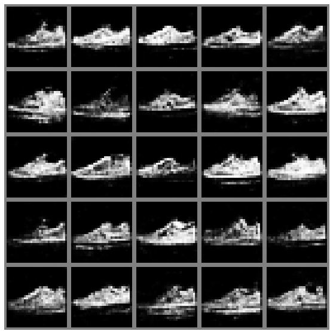
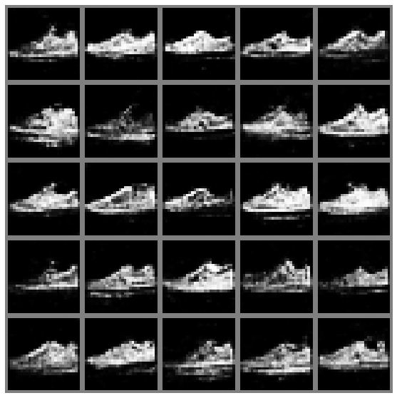
 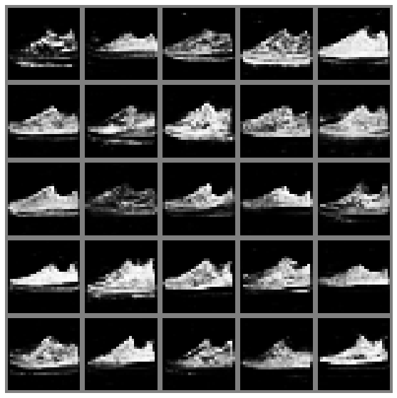
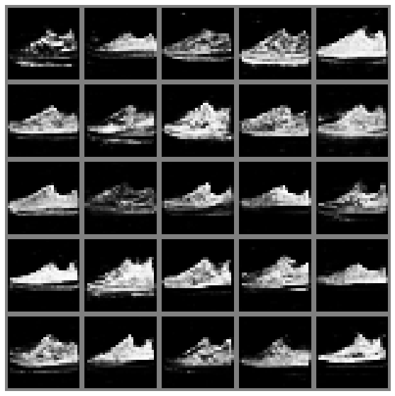


 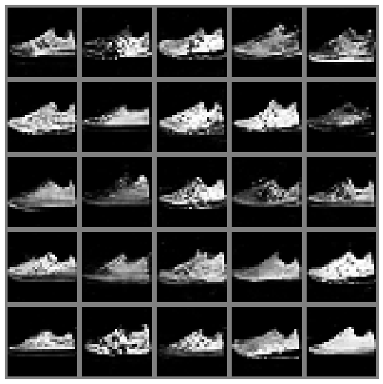
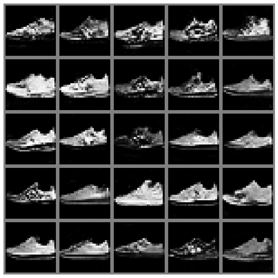
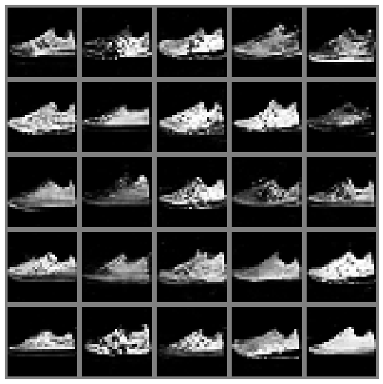
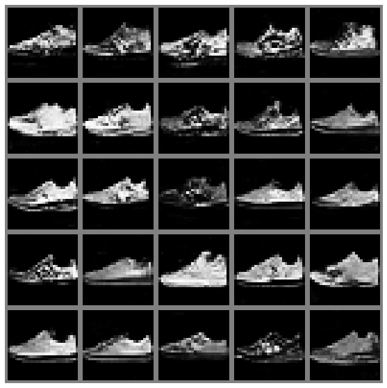


 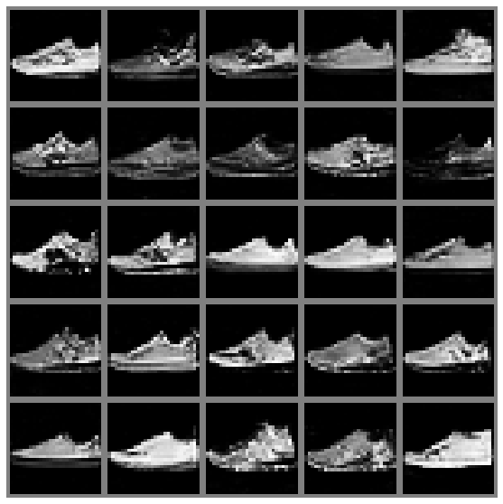
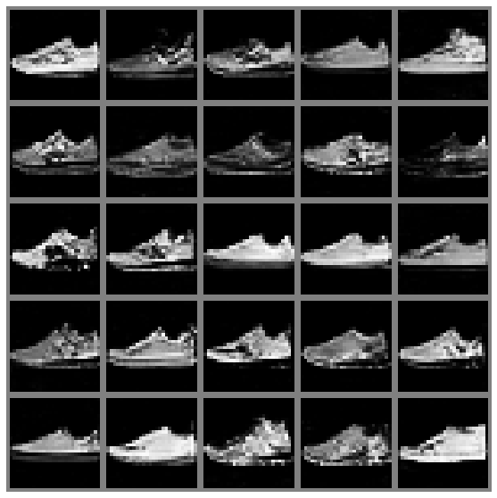

 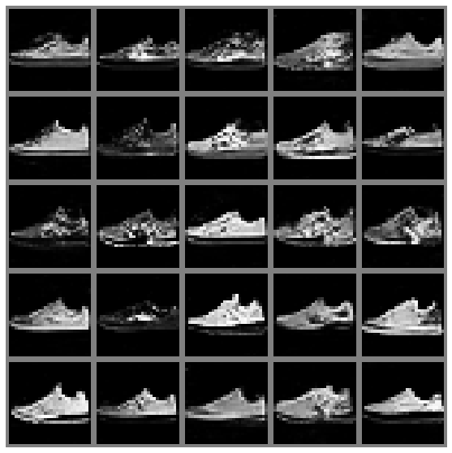
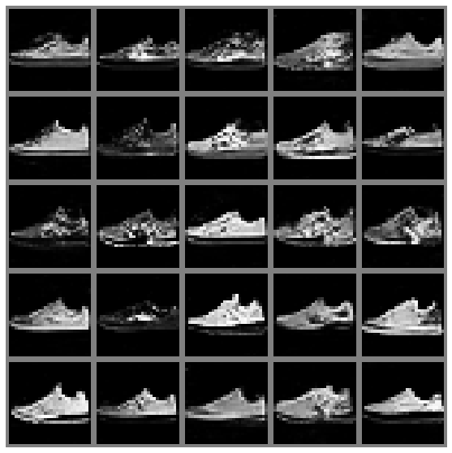


 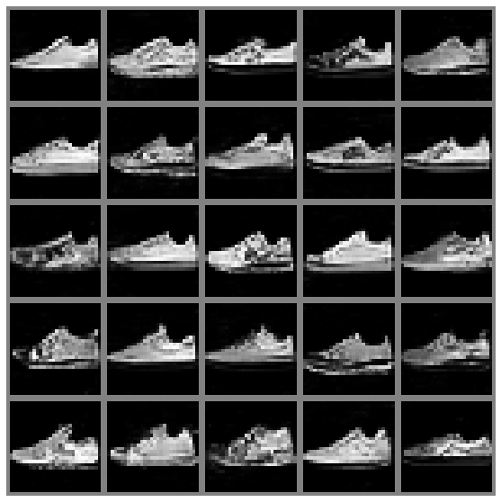
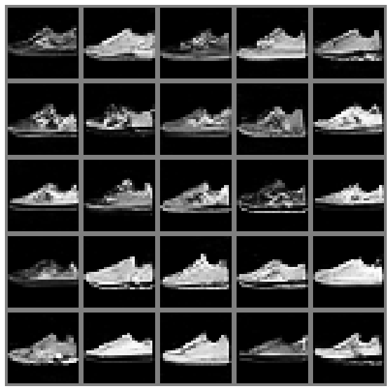
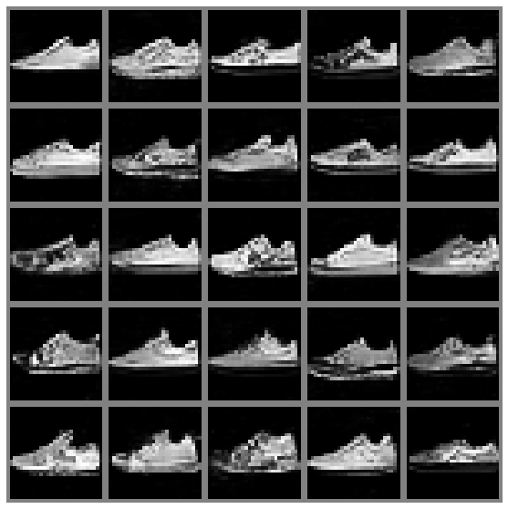
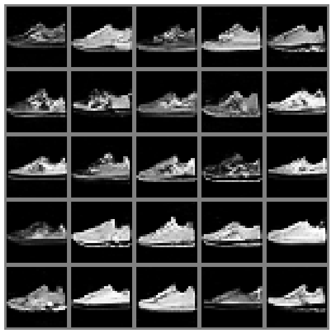
 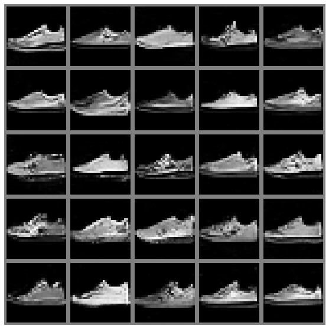
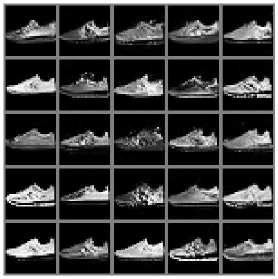
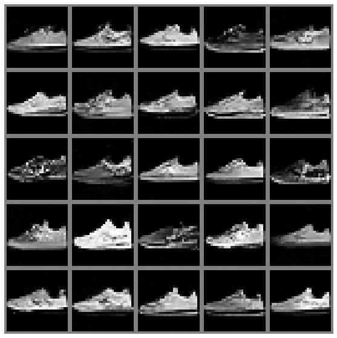
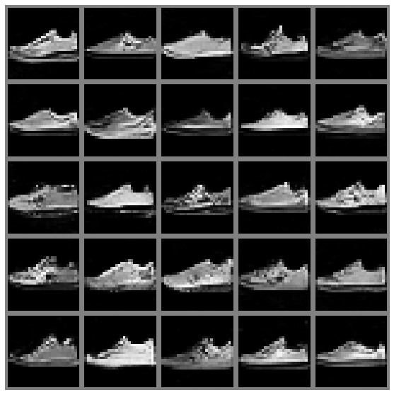
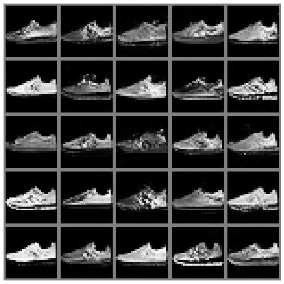
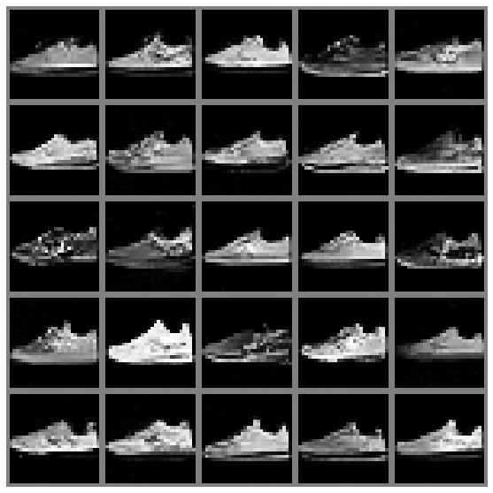


 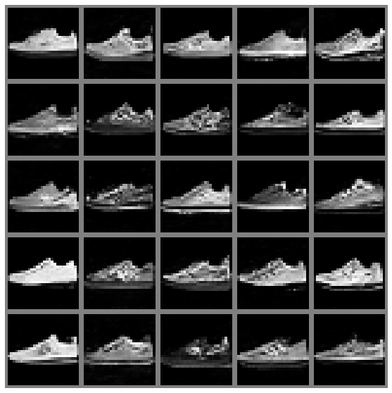
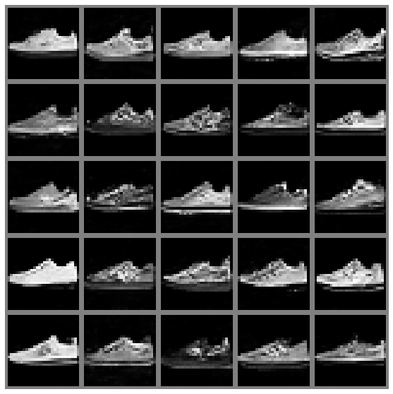
 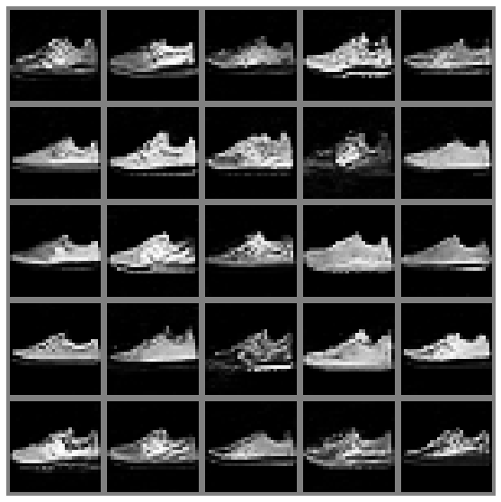
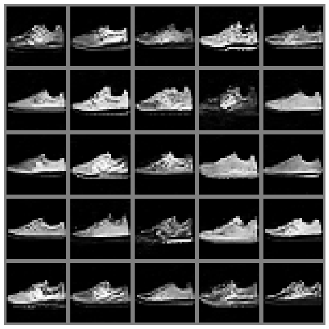
 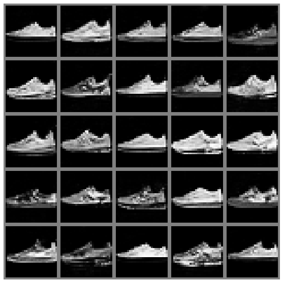
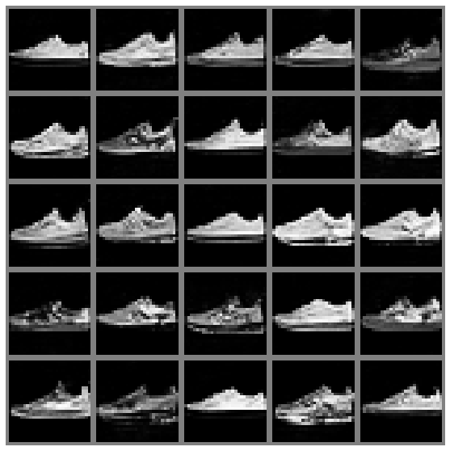